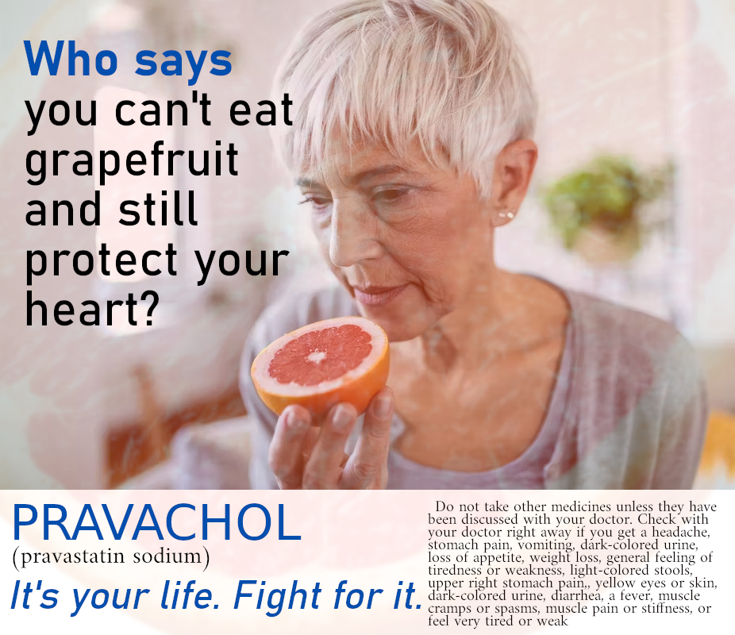
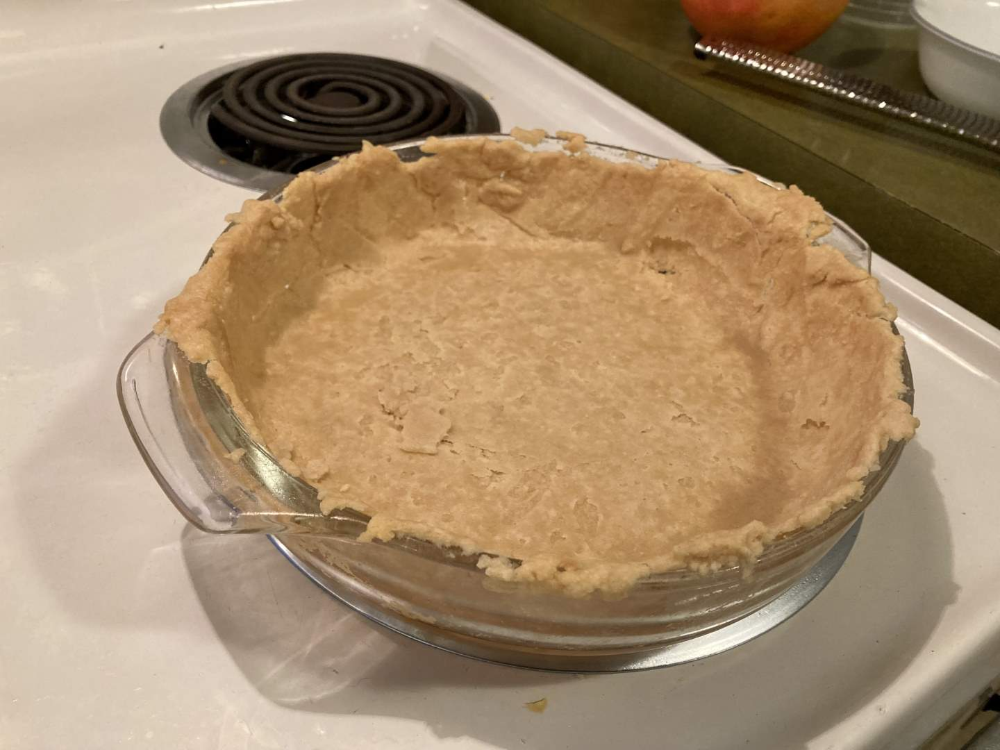
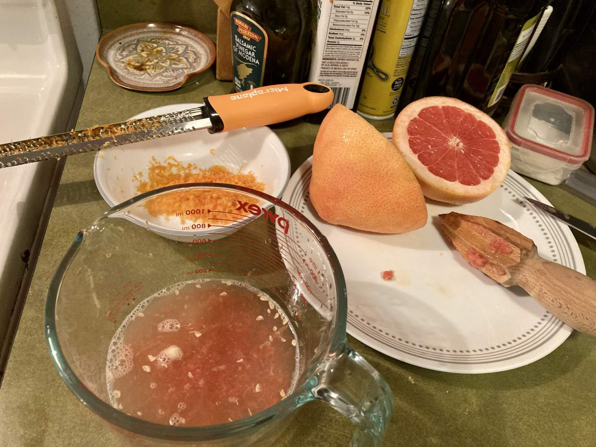
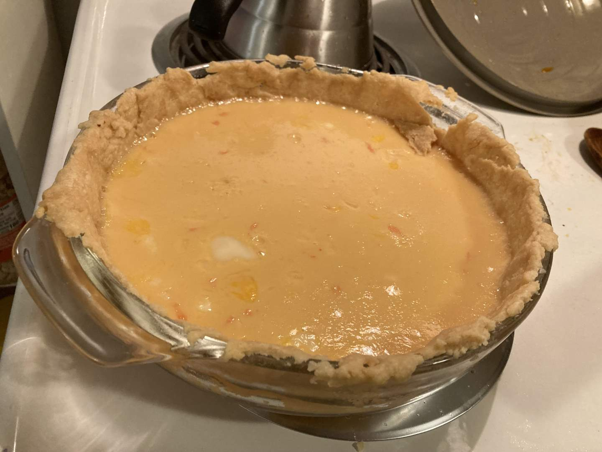
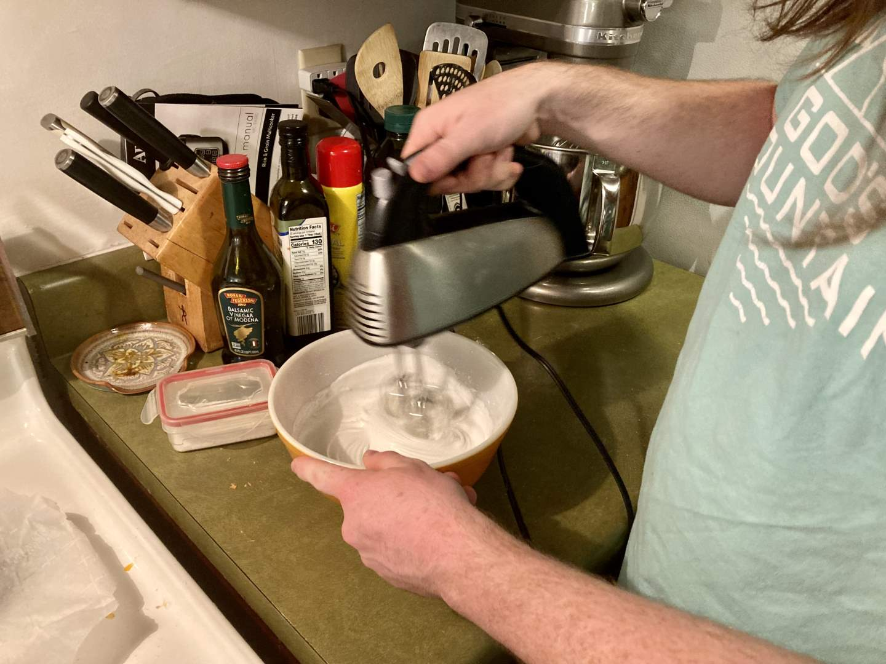
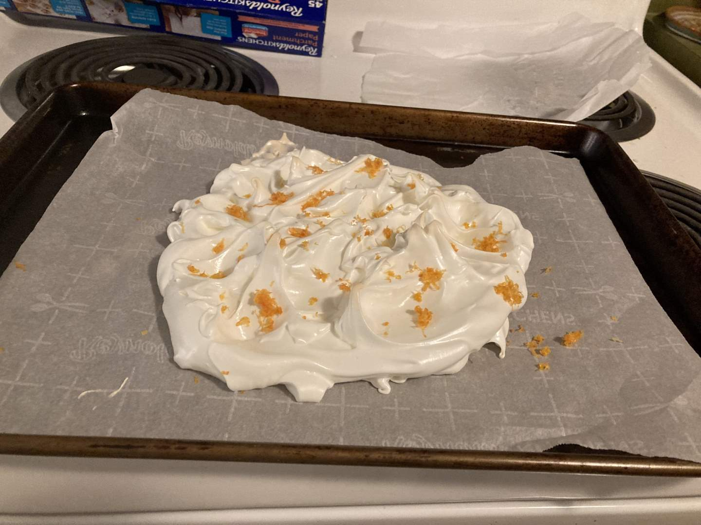
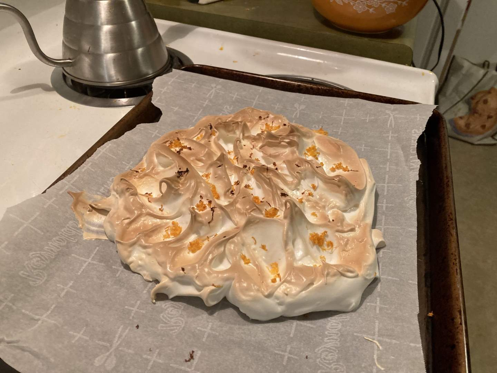
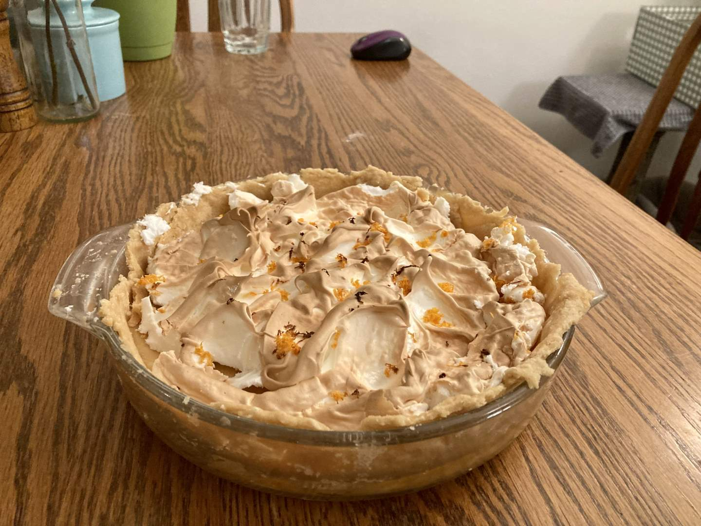
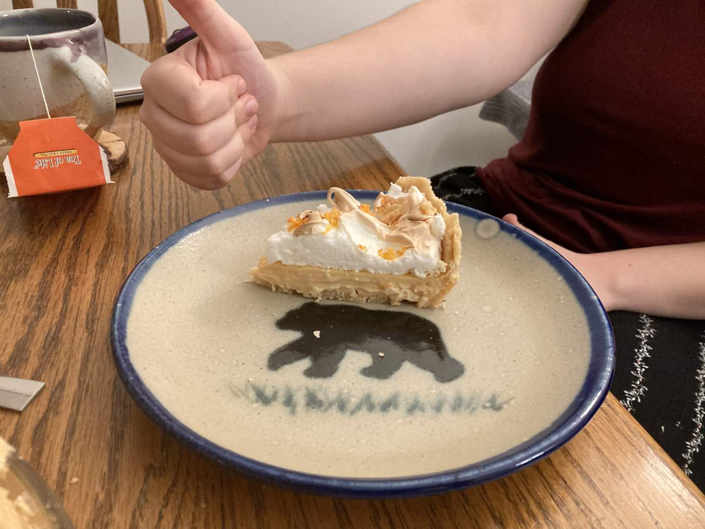

Pie 16: Grapefruit Meringue
2023-10-14Filling recipe from Cookie Dough and Oven Mitt.
Crust recipe from King Arthur Baking.
Meringue recipe from the Spruce Eats.
Taste:
Difficulty:
Vibes:
Suggested pairing: Paprika chicken and potatoes
Grapefruit is a black sheep among the common members of the Citrus genus, what with their pink flesh and bitter aftertaste. If you dive into the citrus rabbit hole you can easily find weirder fruits, but does the world produce 9 million tons of fingered citrons per year?
One way the grapefruit is not unique within the genus is its interference with several drug-metabolizing enzymes, particularly the hepatic and intestinal cytochrome P450 isoform CYP3A4. Grapefruit (also lime and pomelo) juice contains furanocoumarins, several of which are potent inhibitors of CYP3A4. If a drug normally metabolized rapidly by CYP3A4 (there are many) is taken soon after a glass of grapefruit juice, the maximum blood concentration of the drug will be much higher than expected. This can lead to serious side effects depending on the drug. (Review article on the subject.) Cooking probably doesn’t remove the risk.
This isn’t a trivial or hypothetical risk. Here’s a case study about a woman whose previously well-tolerated statin dose caused rhabdomyolysis (muscle breakdown) after she followed a health magazine’s advice by eating a grapefruit every day. Key takeaway: if you need to take a statin and really want to continue eating grapefruit, ask for pravastatin, which is metabolized primarily by the kidneys.
Last Wednesday I noticed a pile of those enzyme-inhibiting fruits on sale at a local grocery store. We hadn’t chosen a pie for the week yet so I made a quick decision and bought a pair. At home, I settled on a grapefruit custard filling in a pastry crust. It took me a while to find a satisfactory recipe because I didn’t want one that asked for too much or too little grapefruit juice or for any lemon juice.
 
Originally the plan was for a meringue pie. However, I got nervous about time while making the filling and put it in the oven without a meringue, thinking I could use whipped cream instead. While the pie was baking I changed my mind on whether there was enough time left in the evening and decided not to waste the egg whites left out of the filling.
 It was my first time ever making a meringue, and it was one where the eggs weren’t fresh and I had dropped a bit of yolk in the bowl by accident. Fortune favored me and the meringue whipped up just fine. I spooned it onto a piece of parchment paper and sprinkled on some grapefruit zest for color. After baking for about 15 minutes and a few minutes of broiling, I took the rubbery mat of egg fluff out to cool.
 When I tried to slip a spatula under the meringue I was shocked to realize just how sticky it was! I don’t know why I expected it to come up easily. Katie Beth had to help me peel the paper off the meringue and we carefully plopped it onto the top of the cooled pie filling. Unfortunately, our aim was a bit off-center and I had to engage in some plastic surgery to fill the gaps and deal with the overhang.
The second biggest shock of the night occurred when we tasted slices of the pie and found it absolutely delectable. I had been semi-consciously preparing myself for it to be mid, but instead, the grapefruit meringue pie was one of the tastiest we’ve yet made. And it was beautiful too! My prejudices against both grapefruit and eggy dishes were proved unfounded. I would recommend the recipe if I could but this was a sort of Frankenpie creation, so cook at your own risk (as always).
